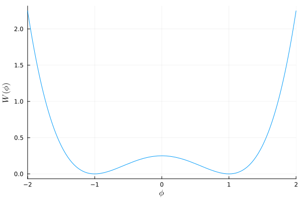
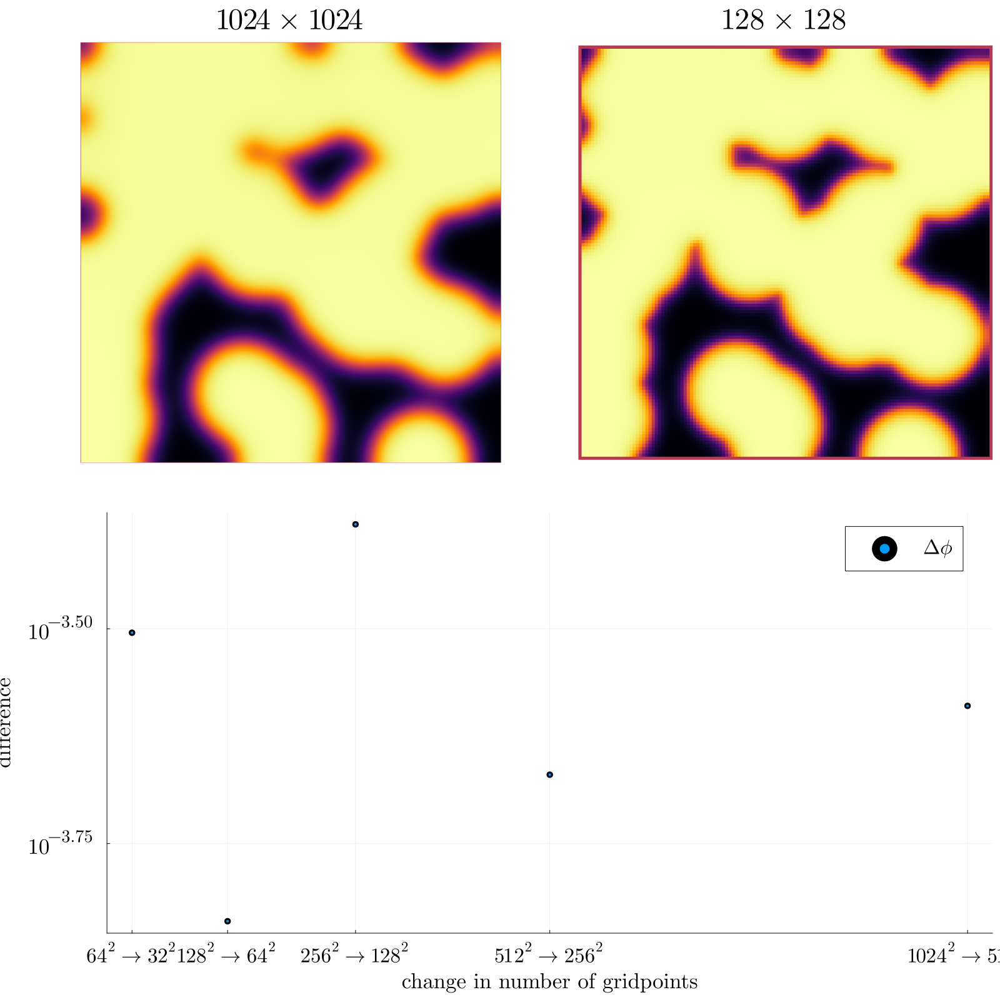

Numerical methods
on the Cahn-Hilliard Equation
This Thesis gives a short overview and derivation for the Cahn-Hilliard Equation. It uses a discretization by the authors (Shin, Jeong, and Kim 2011) as baseline, and expands upon this dicretisation with an elliptical relaxation approach. It introduces evaluation metrics regarding stability in time, space and during sub-iteration. And compares the elliptical approach against the baseline. Furthermore, it shows a qualitative success of the elliptical solver, however it also highlights challenges in numerical stability.
Table of Contents
1. Introduction
The Cahn-Hilliard (CH) equation is a well known fourth order PDE used in multi-phase flow. It is used to couple different phases with a diffuse-interface, as compared to a sharp interface, approach. Therefore, it has a smooth transition between phases. The CH equation serves the same purpose, as the second order Allen-Cahn equation. However, the Allen-Cahn equation is not mass conservative. Hence, the Cahn-Hilliard equation is used if mass conservation is required. In this thesis we implement numerical solvers for the Cahn-Hilliard equation in the Julia programming language. We begin by giving an overview and a derivation for the analytical CH equation in Chapter 2. We then show mass conservation and a decrease in total energy for it. The Chapter 3 introduces our discretization and a finite difference based two grid method. We explain the necessary functions, describe the relevant steps of our numerical implementation, and give their implementation. Additionally we introduce the initial conditions we used in this thesis. In Chapter 4 we evaluate this method’s stability,discrete mass conservation and discrete energy decrease that we have shown continuously for the analytical CH equation. Our thesis introduces a analytical relaxation approach to the classical CH equation, where instead of solving a fourth order PDE 1, we solver a second order relaxed PDE and an additional elliptical PDE. In the chapter 5 we introduce this approach, and then derive a numerical solver using the method described in chapter 3. Hereupon we derive and implement the necessary functions for the discretized relaxed equation, and we introduce a simple solver for the elliptical PDE. Subsequently, in chapter 6, we evaluate our relaxed method against the baseline with the same measures, as introduced in chapter 4.
We began writing this thesis with a reproducible research philosophy in mind. Hence, we provide the explanation you are reading, and the implementation in the same file. The original aim was to have the mathematical formulas and their implementation interleaved in a way, that leaves no room for interpretation. While we fall short of this goal, we still provide all relevant code in the relevant sections and the appendix. All shown code is therefore the code that is run on our machine. Since not all parts of the code are relevant for understanding, unimportant sections are implemented elsewhere. Didacticly they aer replaced with a comment of form <<unumportant-code-section>>. Their implementation can be found in Thesis_jl.org in a code block of the same name.
We did experiment with additional tools such as org-mode that allow for scientific note-taking and literate programming.
This file is available on our github repository at https://github.com/ProceduralTree/CahnHilliardJulia.git
as Thesis_jl.org.
2. The Cahn-Hilliard equation
The Cahn-Hilliard(CH) equation is a partial differential equation (PDE) that governs the dynamics of a two-phase fluid (Wu 2022). The form of the CH equation used in this thesis in the domain \( \Omega \times (0, T) \,, \Omega \subset \mathbb{R}^d \,, d \in \mathbb{N} \,, T>0 \),
\begin{equation} \label{org636045b} \begin{aligned} \partial_{t}\phi(x,t) &= \nabla \cdot(M(\phi)\nabla\mu), \\ \mu &= - \varepsilon^2 \Delta\phi + W'(\phi), \end{aligned} \end{equation}where the variables \( \phi , \mu : \Omega \times (0,T) \to \mathbb{R}^d \) are phase-field variable and chemical potential, \(\varepsilon\) is a positive constant correlated with interface thickness, \( W(\phi) \) is a double well potential and \(M(\phi) > 0\) is a mobility coefficient (Wu 2022). \( \phi\) is defined in an interval \(I=[-1,1] \) and represent the different phases.
\begin{align*} \phi &= \begin{cases} 1 &\,, \phi \in \text{phase 1} \\ -1 &\,, \phi \in\text{phase 2} \end{cases} \end{align*}In this thesis we assume \(M(\phi) \equiv 1 \), simplifying the CH equation.
The advantages of the CH approach, as compared to traditional boundary coupling, are for example: “explicit tracking of the interface” (Wu 2022), as well as “evolution of complex geometries and topological changes […] in a natural way” (Wu 2022). In practice, it enables linear interpolation between different formulas on different phases.
2.1. Physical derivation of the CH equation eqref:eq:CH
2.1.1. The free energy
The authors in (Wu 2022) define the CH equation using the Ginzburg-Landau free energy equation:
\begin{align} \label{org789eaa5} E^{\text{bulk}}[\phi] &= \int_{\Omega} \frac{\varepsilon^2}{2} |\nabla \phi |^2 + W(\phi) \, dx , \end{align}where \(W(\phi) \) denotes the Helmholtz free energy density of mixing (Wu 2022) that we approximate it in further calculations with \(W(\phi) = \frac{(1-\phi ^2)^2}{4}\) as in (Shin, Jeong, and Kim 2011) shown in Fig. 1.

Figure 1: Double well potential \( W(\phi) \)
The chemical potential, \( \mu \), then follows as the variational derivation of the free energy in Eq.eqref:eq:energy.
\begin{align} \label{orga689045} \mu &= \frac{\delta E_{bulk}(\phi)}{\delta \phi} = -\varepsilon^2 \Delta \phi + W'(\phi) \end{align}2.1.2. Derivation of the CH equation from mass balance
The paper (Wu 2022) states that the observable phase separation is driven by a diffusion resulting from the gradient in chemical potential \( \mu \). The emergent conservative dynamics motivate the following diffusion equation
\begin{equation} \label{org21b126c} \partial_t \phi + \nabla \cdot \mathbf{J} = 0, \end{equation}where \( \mathbf{J} = -\nabla \mu \) represents mass-flux. We follow the authors (Wu 2022) in deriving the CH equation by combining Eq.eqref:eq:chemical-potential and Eq.eqref:eq:massbal.
\begin{equation} \begin{aligned} \implies \partial_t \phi &=- \nabla \cdot \mathbf{J} = \Delta\mu , \\ \mu &= -\varepsilon^2 \Delta \phi + W'(\phi) \,, \end{aligned} \end{equation}Furthermore the CH equation is mass conservative under homogeneous Neumann boundary conditions, defined as:
\begin{equation} \label{org160fb89} \begin{aligned} \mathbf{J} \cdot \mathbf{n} &= 0 & \text{on} \, \partial\Omega &\times (0,T),\\ \partial_n\phi &= 0 & \text{on} \, \partial\Omega &\times (0,T), \end{aligned} \end{equation}where \( \mathbf{n} \) is the outward normal on \( \partial \Omega \). To show the conservation of mass we analyze the change in total mass in the domain \( \Omega \) over time.
\begin{equation} \label{orge70e1c8} \begin{aligned} \frac{d}{dt}\int_{\Omega}\phi \ d \mathbf{x} &=\int_{\Omega}\frac{\partial \phi}{\partial t} \ d\mathbf{x} \\ &= - \int_{\Omega} \nabla \cdot \mathbf{J} \ d\mathbf{x}\\ &= \int_{\partial\Omega} \mathbf{J} \cdot \mathbf{n} \ d\mathbf{s} \\ &= 0 & \forall t\in(0,T)\,, \end{aligned} \end{equation}In order to show thermodynamic consistency of the CH equation, we take the time derivation of the free energy functional Eq.eqref:eq:energy.
\begin{align*} \frac{d}{dt}E^{bulk}[\phi(t)] &= \int_{\Omega} ( \varepsilon^2 \nabla \phi \cdot \nabla \partial_t \phi + W'(\phi) \partial_t \phi) \ d \mathbf{x} \\ &=\int_{\Omega} (\varepsilon^2\nabla\phi + W'(\phi))\partial_t\phi \ d\mathbf{x}\\ &=\int_{\Omega} \mu \partial_t \phi \ d\mathbf{x}\\ &= \int_{\Omega} \mu \cdot \Delta\mu \ d\mathbf{x} \\ &= -\int_{\Omega} \nabla\mu \cdot \nabla\mu \ dx + \int_{\partial\Omega} \mu \nabla\phi_t \cdot \mathbf{n} \ dS \\ &\stackrel{\partial_n\phi = 0}{=} - \int_{ \Omega } |\nabla \mu|^2 \ d \mathbf{x}, & \forall t \in (0,T) \end{align*}3. Baseline multi-grid solver
3.1. The discretization of the CH equation:
As baseline for numerical experiments we use a two-grid method based on the finite difference method defined in (Shin, Jeong, and Kim 2011). Our discretization follows the one taken by the authors in (Shin, Jeong, and Kim 2011). We discretize our domain \( \Omega \) to be a Cartesian-grid \( \Omega_d \) on a square with side-length \( N\cdot h \), where N is the number of grid-points in one direction, and \( h \) is the distance between grid-points. In all our initial data \( h \) is \( 3\cdot10^{-3}\) and \( N=64 \). However, for stability tests we change \( h \) and \( N \).
\begin{equation} \Omega_d = \left\{ i,j \mid i,j \in \mathbb{N} \,, i,j \in [2,N+1] \right\} \end{equation}where \( \Omega_{d} \) is the discrete version or our domain as shown in 2.

Figure 2: Discrete Domain used for most of the experiments in this Thesis
We discretize the phase-field ,\( \phi \), and chemical potential ,\( \mu \), into grid-wise functions \(\phi_{ij}, \mu_{ij} \)
\begin{equation} \begin{aligned} \phi_{ij}^n: \Omega_d \times \left\{ 0, \dots \right\} &\to \mathbb{R}\\ \mu_{ij}^n: \Omega_d \times \left\{ 0, \dots \right\} &\to \mathbb{R} \end{aligned} \end{equation}Here \( n \) denotes the nth time-step, and \( (i,j) \) are Cartesian indices on the discrete domain \( \Omega_d \). The authors in (Shin, Jeong, and Kim 2011) then use the characteristic function \( G \) of the domain \( \Omega \) to enforce no-flux boundary conditions eqref:eq:boundary-conditions.
\begin{align*} G(x,y) &= \begin{cases} 1, & (x,y) \in \Omega \\ 0, & (x,y) \not\in \Omega \end{cases} \end{align*}We implement the discrete version of \( G \) on \( \Omega_d \) as follows:
\begin{align*} G_{ij} &= \begin{cases} 1, & i,j \in [2,N+1] \\ 0, & \text{else} \end{cases} \end{align*}The definition of \( G_{ij} \) with \( i,j \in [2,N+1] \) enables us to evaluate \( G_{ij} \) of-grid.
function G(i, j, len, width) if 2 <= i <= len + 1 && 2 <= j <= width + 1 return 1.0 else return 0.0 end end
We then define the discrete derivatives \( D_x\phi_{ij}, \ D_y\phi_{ij} \) using centered differences:
\begin{align} D_x\phi^{n+1,m}_{i+\frac{1}{2} j} &= \frac{\phi^{n+1,m}_{i+1j} - \phi^{n+1,m}_{ij}}{h} & D_y\phi^{n+1,m}_{ij+\frac{1}{2}} &= \frac{\phi^{n+1,m}_{ij+1} - \phi^{n+1,m}_{ij}}{h} \end{align}We define \( D_x\mu_{ij}^{n+\frac{1}{2},m} , D_y\mu_{ij}^{n+\frac{1}{2},m} \) in the same way. Next we define the discrete gradient \( \nabla_d \phi^{n+1,m}_{ij}\), as well as a modified Laplacian \( \nabla_d \cdot (G_{ij} \nabla_d \phi^{n+1,m}_{ij} )\):
\begin{equation} \label{org8e3fb8d} \begin{aligned} \nabla_d \phi^{n+1,m}_{ij} &= \left(D_x \phi^{n+1,m}_{i+1j} , \ D_y \phi^{n+1,m}_{ij+1}\right) \,,\\ \nabla_d \cdot (G_{ij} \nabla_d \phi^{n+1,m}_{ij}) &= \frac{G_{i+\frac{1}{2}j}D_x \phi^{n+1,m}_{i+\frac{1}{2}j} - G_{i-\frac{1}{2}}D_x \phi^{n+1,m}_{i-\frac{1}{2}j} + D_y \phi^{n+1,m}_{ij+\frac{1}{2}} - D_y \phi^{n+1,m}_{ij-\frac{1}{2}}}{h} \\ &= \frac{ G_{i+\frac{1}{2}j} \phi^{n + 1,m}_{i+1j} + G_{i-\frac{1}{2}j} \phi^{n +,m}_{i-1j} + G_{ij+\frac{1}{2}} \phi^{n +,m}_{ij+1} + G_{ij-\frac{1}{2}} \phi^{n +,m}_{ij-1} }{h^2}\\ & \, - \frac{\left( G_{i+\frac{1}{2}j} + G_{i-\frac{1}{2}j} + G_{ij+\frac{1}{2}} + G_{ij-\frac{1}{2}} \cdot \phi_{ij} \right)}{h^2} \,, \end{aligned} \end{equation}The discretization for \( \nabla_d\mu_{ij}^{n+\frac{1}{2},m} , \nabla_d \cdot (G_{ij} \nabla_d \mu^{n+\frac{1}{2},m}_{ij}) \) are done the same as for \( \phi_{ij}^{n+1} \) We define \( \nabla_d \cdot (G_{ij} \nabla_d \phi_{ij} )\) instead of a discrete Laplacian \( \Delta_d \) to ensure a discrete version of boundary conditions eqref:eq:boundary-conditions. The authors in (Shin, Jeong, and Kim 2011) show this to be the case by expanding \( \nabla_d \cdot (G_{ij} \nabla_d\phi_{ij}) \). Notably, when one point lies outside the domain, e.g. \( G_{i + \frac{1}{2}} = 0 \) then the corresponding discrete gradient \( \frac{\phi_{i+1}^{n+1} - \phi_i}{h} \) is weighted by 0. This corresponds the discrete version of \( \partial_n\phi = 0 \). The authors in (Shin, Jeong, and Kim 2011)
To simplify the notation for discretized derivatives we use the following abbreviations:
- \( \Sigma_G \phi_{ij} = G_{i+\frac{1}{2}j} \phi^{n + 1,m}_{i+1j} + G_{i-\frac{1}{2}j} \phi^{n +1,m}_{i-1j} + G_{ij+\frac{1}{2}} \phi^{n +1,m}_{ij+1} + G_{ij-\frac{1}{2}} \phi^{n +1,m}_{ij-1} \)
- \( \Sigma_{Gij} = G_{i+\frac{1}{2}j} + G_{i-\frac{1}{2}j} + G_{ij+\frac{1}{2}} + G_{ij-\frac{1}{2}} \)
Code:
function neighbours_in_domain(i, j, G, len, width) ( G(i + 0.5, j, len, width) + G(i - 0.5, j, len, width) + G(i, j + 0.5, len, width) + G(i, j - 0.5, len, width) ) end function discrete_G_weigted_neigbour_sum(i, j, arr, G, len, width) ( G(i + 0.5, j, len, width) * arr[i+1, j] + G(i - 0.5, j, len, width) * arr[i-1, j] + G(i, j + 0.5, len, width) * arr[i, j+1] + G(i, j - 0.5, len, width) * arr[i, j-1] ) end
We can then write the modified Laplacian \( \nabla_d (G \nabla_d\phi_{ij}^{n+1}) \) as:
\begin{align*} \nabla_{d} \cdot(G \nabla_d\phi_{ij}^{n+1}) &= \frac{\Sigma_G\phi_{ij}^{n+1} - \Sigma_{Gij}\cdot \phi_{ij}^{n+1}}{h^2} \end{align*}We use this modified Laplacian to deal with boundary conditions. Our abbreviations simplify separating implicit and explicit terms in the discretization.
3.2. Initial data
For testing we use initial phase-fields defined by the following equations:
\begin{equation} \begin{aligned} \phi_{ij} &= \begin{cases} 1 &\,, \|(i,j) - (\frac{N}{2} , \frac{N}{2})\|_p < \frac{N}{3}\\ -1 &\,,else \end{cases} & \text{where } p \in \{2,\infty\} \\ \phi_{ij} &= \begin{cases} 1 &\,, i < \frac{N}{2} \\ -1 &\,,else \end{cases} \\ \phi_{ij} &= \begin{cases} 1 &\,, \|(i,j) - (\frac{N}{2} , 2)\|_2 < \frac{N}{3} \\ -1 &\,,else \end{cases} \\ \phi_{ij} &= \begin{cases} 1 &\,, \| (i,j) - q_k \|_p < \frac{N}{5} \\ -1 &\,,else \end{cases} & p \in \{1,2, \infty\} , q_k \in Q \end{aligned} \end{equation}where \( q_k \) are random points inside my domain. Those we generate those using the following RNG setup in Julia

Figure 3: Examples of different phase-fields used as the initial condition in this work.
3.3. Numerical ansatz
The authors in (Shin, Jeong, and Kim 2011) then define the discrete CH equation adapted for the domain as:
\begin{equation} \label{orgc771f38} \begin{aligned} \frac{\phi_{ij}^{n+1} - \phi_{ij}^n}{\Delta t} &= \nabla _d \cdot (G_{ij} \nabla_d \mu_{ij}^{n+\frac{1}{2}} ) \,, \\ \mu_{ij}^{n+\frac{1}{2}} &= 2\phi_{ij}^{n+1} - \varepsilon^2 \nabla_d \cdot (G_{ij} \nabla _d \phi_{ij}^{n+1} ) + W'(\phi_{ij}^n) - 2\phi _{ij}^n \,, \end{aligned} \end{equation}and derive a numerical scheme from this implicit equation.
3.4. The discrete system
The authors in (Shin, Jeong, and Kim 2011) derive their method by separating eqref:eq:discrete-cahn-hilliard into implicit and linear terms, and explicit non-linear terms. We write the implicit terms in form of a function \( L: \RR^2 \to \RR^2 \) and the explicit terms in \( (\zeta^n_{ij} , \psi^n_{ij})^T \).
\begin{align*} L \begin{pmatrix} \phi^{n+1}_{ij} \\ \mu^{n+\frac{1}{2}}_{ij} \end{pmatrix} &= \begin{pmatrix} \frac{\phi^{n+1}_{ij}}{\Delta t} - \nabla _d \cdot ( G_{ij} \nabla _d \mu^{n+\frac{1}{2}}_{ij} ) \\ \varepsilon^2 \nabla _d \cdot (G \nabla_d \phi_{ij}^{n+1}) - 2\phi_{ij}^{n+1} + \mu_{ij}^{n+\frac{1}{2}} \end{pmatrix} \end{align*}This operator follows from eqref:eq:discrete-cahn-hilliard by separating implicit and explicit terms \( L \) and \( (\zeta^n_{ij} , \psi^n_{ij})^T \), respectively.
\begin{align*} \begin{pmatrix} \zeta^n_{ij} \\ \psi^n_{ij} \end{pmatrix} &= \begin{pmatrix} \frac{\phi_{ij}^{n}}{\Delta t}\\ W'(\phi_{ij}^n) - 2\phi_{ij}^n \end{pmatrix} \end{align*}Due to being explicit, we know everything needed to calculate \( (\zeta^n_{ij} , \psi^n_{ij})^T \) at the beginning of each time step. We compute those values once and store them in the solver.
Furthermore, as it is needed later on, we derive its Jacobian with respect to the current grid point \( (\phi^{n+1}_{ij} , \mu^{n+\frac{1}{2}}_{ij})^{T} \):
\begin{align*} DL\begin{pmatrix} \phi_{ij} \\ \mu_{ij} \end{pmatrix} &= \begin{pmatrix} \frac{1}{\Delta t} & \frac{1}{h^2}\Sigma_{Gij} \\ -\frac{\varepsilon^2}{h^2}\Sigma_{Gij} - 2 & 1 \end{pmatrix} \end{align*}Implementation details can be found in the Appendix under baseline.
3.5. SMOOTH operator
The authors (Shin, Jeong, and Kim 2011)derived Gauss-Seidel Smoothing from:
\begin{align} \label{org40b5888} L \begin{pmatrix} \phi^{n+1}_{ij} \\ \mu^{n+\frac{1}{2}}_{ij} \end{pmatrix} &= \begin{pmatrix} \zeta^n_{ij} \\ \psi^n_{ij} \end{pmatrix} . \end{align}SMOOTH consists of point-wise Gauss-Seidel relaxation, by solving Eq.eqref:eq:smooth for all \( i,j \) with the initial guess for \( \zeta^n_{ij} , \psi^n_{ij} \). Since \( L \) is linear we can write Eq.eqref:eq:smooth as
\begin{equation} \label{org9af5aa9} \begin{aligned} \begin{pmatrix} \zeta_{ij}^n\\ \psi_{ij}^n \end{pmatrix} &= DL\begin{pmatrix} \phi_{ij}^{n+1} \\ \mu_{ij}^{n+\frac{1}{2}} \end{pmatrix} \cdot \begin{pmatrix} \phi^{n+1}_{ij} \\ \mu^{n+\frac{1}{2}}_{ij} \end{pmatrix} + \begin{pmatrix} - \frac{1}{h^2} \Sigma_{Gij}\mu_{ij}^{n+\frac{1}{2}} \\ + \frac{\varepsilon^2}{h^2} \Sigma_{Gij}\phi_{ij}^{n+1} \\ \end{pmatrix} ,\\ \begin{pmatrix} \zeta_{ij}^n\\ \psi_{ij}^n \end{pmatrix} - \begin{pmatrix} - \frac{1}{h^2} \Sigma_{Gij}\mu_{ij}^{n+\frac{1}{2}} \\ + \frac{\varepsilon^2}{h^2} \Sigma_{Gij}\phi_{ij}^{n+1} \\ \end{pmatrix} &= DL\begin{pmatrix} \phi_{ij}^{n+1} \\ \mu_{ij}^{n+\frac{1}{2}} \end{pmatrix} \cdot \begin{pmatrix} \phi^{n+1}_{ij} \\ \mu^{n+\frac{1}{2}}_{ij} \end{pmatrix} \,, \end{aligned} \end{equation}where
- \( \Sigma_G \phi_{ij}^{n+1} = G_{i+\frac{1}{2}j} \phi^{n + 1,m}_{i+1j} + G_{i-\frac{1}{2}j} \phi^{n + 1,m}_{i-1j} + G_{ij+\frac{1}{2}} \phi^{n + 1,m}_{ij+1} + G_{ij-\frac{1}{2}} \phi^{n + 1,m}_{ij-1} \),
- \( \Sigma_G \mu_{ij} = G_{i+\frac{1}{2}j} \mu^{n + \frac{1}{2},m}_{i+1j} + G_{i-\frac{1}{2}j} \mu^{n + \frac{1}{2},m}_{i-1j} + G_{ij+\frac{1}{2}} \mu^{n + \frac{1}{2},m}_{ij+1} + G_{ij-\frac{1}{2}} \mu^{n + \frac{1}{2},m}_{ij-1} \),
In order to compute \( \left( \phi_{ij}^{n+1} , \mu^{n+\frac{1}{2}}_{ij} \right) \) we have to evaluate those grid-wise functions on at neighboring indices \( k,l \) e.g. \( k=i+1 , l=j-1 \). Since values for \( \phi_{kl}^{n+1,m} , \mu_{kl}^{n+\frac{1}{2},m} \) are unknown, if \( k > i , l > j \), the authors in (Shin, Jeong, and Kim 2011) and we use initial approximations, and the values of the current smooth iteration else. As initial approximation we use the values of \( \phi_{kl}^{n+1,m} , \mu_{kl}^{n+\frac{1}{2},m} \) from the last smoothing iteration. The equation Eq.eqref:eq:explicit-smooth is of form \(b = Ax\) We then and solve Eq.eqref:eq:explicit-smooth for \( \left( \phi_{ij}^{n+1} , \mu^{n+\frac{1}{2}}_{ij} \right) \).
function SMOOTH!( solver::T, iterations, adaptive ) where T <: Union{multi_solver, adapted_multi_solver , gradient_boundary_solver} for k = 1:iterations # old_phase = copy(solver.phase) for I in CartesianIndices(solver.phase)[2:end-1, 2:end-1] i, j = I.I <<calculate-left-hand-side-b>> res = dL(solver, i,j ) \ b solver.phase[i, j] = res[1] solver.potential[i, j] = res[2] end end end
We denote the approximations for \( \left( \phi_{ij}^{n+1} , \mu^{n+\frac{1}{2}}_{ij} \right) \) after smoothing, as \( \left( \bar{\phi}_{ij}^{n+1} , \bar{\mu}^{n+\frac{1}{2}}_{ij} \right) \) In Fig.4 we show 4 of the 7 initial data after one 200 iterations of smoothing. It is apparent that the sharp interface from the initial Data has diffused.

Figure 4: Inputs from 3.2 after SMOOTH.
3.6. Multigrid method
The numerical method proposed in (Shin, Jeong, and Kim 2011) consists of a V-cycle multi-grid method derived from previously stated operators. Specifically we use a two-grid implementation consisting of.
for j in 1:timesteps set_xi_and_psi!(solvers[1]) for i = 1:subiterations v_cycle!(solvers, 1) end end
where the V-cycle is a
- A Gauss-Seidel relaxation for smoothing, as described in Chapter 5.4.
- calculate the residual error \( \left(d_{ij,H}^{n+1,m} , r_{ij,H}^{n+1,m} \right) = L\left( \phi_{ij}^{n+1} , \mu^{n+\frac{1}{2}}_{ij} \right) - (\zeta^n_{ij} , \psi^n_{ij} ) \).
- restriction and between grids \( h \to H \).
- a Newton iteration to solve \( L(\hat{\phi}_{ij,H}^{n+1,m}, \hat{\mu}_{ij,H}^{n+\frac{1}{2},m})_H = L(\bar{\phi}_{ij,H}^{n+1,m} , \bar{\mu}_{ij,H}^{n+\frac{1}{2},m}) + (d_{ij,H}^{n+1,m} , r_{ij,H}^{n+1,m}) \).
We solve for \( \left( \hat{\phi}_{ij,H}^{n+1,m}, \hat{\mu}_{ij,H}^{n+\frac{1}{2},m} \right) \) using the same iteration as in Chapter 5.4 however we replace \( (\zeta_{ij}^{n} , \psi_{ij}^n) \) with \( L(\bar{\phi}_{ij,H}^{n+1,m} , \bar{\mu}_{ij,H}^{n+\frac{1}{2},m}) + (d_{ij,H}^{n+1,m} , r_{ij,H}^{n+1,m}) \). In the iteration, where \( \bar{\phi}_{ij,H}^{n+1,m} , \bar{\mu}_{ij,H}^{n+\frac{1}{2},m} \) are the values after the smooth restricted to the coarser grid and \( d_{ij,H}^{n+1,m} , r_{ij,H}^{n+1,m} \) is the residual from the smooth iteration on the fine grid restricted onto the coarse grid.
- prolongation from \( H\to h \)
- post smoothing
The V-cycle of a two-grid method using pre- and post-smoothing is then stated by:
function v_cycle!(grid::Array{T}, level) where T <: solver solver = grid[level] #pre SMOOTHing: SMOOTH!(solver, 400, false) d = zeros(size(solver.phase)) r = zeros(size(solver.phase)) # calculate error between L and expected values for I in CartesianIndices(solver.phase)[2:end-1, 2:end-1] d[I], r[I] = [solver.xi[I], solver.psi[I]] .- L(solver, I.I..., solver.phase[I], solver.potential[I]) end <<restrict-to-coarse-grid>> #Newton Iteration for solving smallgrid for i = 1:300 for I in CartesianIndices(solver.phase)[2:end-1, 2:end-1] diffrence = L(solution, I.I..., solution.phase[I], solution.potential[I]) .- [d_large[I], r_large[I]] .- L(solver, I.I..., solver.phase[I], solver.potential[I]) local ret = dL(solution, I.I...) \ diffrence u_large[I] = ret[1] v_large[I] = ret[2] end solution.phase .-= u_large solution.potential .-= v_large end <<prolong-to-fine-grid>> SMOOTH!(solver, 800, false) end
After a few iterations, V-cycle exhibits the following behavior:
<<init>> using JLD2 using DataFrames results = jldopen("experiments/iteration.jld2")["result"] anim = @animate for res in eachrow(results) heatmap(res.solver.phase , title="phase field" , legend=:none , aspectratio=:equal , showaxis=false , grid=false , size=(400 ,400)) end gif(anim , "images/iteration.gif" , fps = 10)

Figure 5: A few time steps of the solver for different initial conditions as shown in 3.2
4. Numerical experiments
In the previous Chapter we discretized the CH equation based on the multigrid method described by the authors in (Shin, Jeong, and Kim 2011) and we obtained a numerical scheme for \( \phi , \mu \). In this chapter we analyse the change in mass, change in total energy \( E^{bulk} \), stability in time , space and during sub-iterations.
4.1. Energy evaluations
As discrete energy measure we use:
\begin{equation} \label{org099c04a} \begin{aligned} E^{\text{bulk}}_d(\phi_{ij}) &= \sum_{i,j \in \Omega} \frac{\varepsilon^2}{2} |G\nabla_d \phi_{ij} |^2 + W\left(\phi_{ij}\right) \\ &= \sum_{i,j \in \Omega} \frac{\varepsilon^2}{2} G_{i+\frac{1}{2}j}(D_x\phi_{i+\frac{1}{2}j}) ^2 + G_{ij+\frac{1}{2}}(D_y\phi_{ij+\frac{1}{2}})^2 + W\left(\phi_{ij}\right) .\\ \end{aligned} \end{equation}Since the continous total energy Eq.eqref:eq:energy decreases over time, we expect it’s discrete couterpart to exhibit the same behaviour. Them numerical implementation for the bulk energy can be found in the Appendix 9.4. In Fig.6 we observe the discrete total energy going down with increasing number of time-steps, as we expect from a CH based solver. Visually we observe the energy decrease as reduced surface curvature.

Figure 6: Behaviour of energy \( E_{bulk} \) over time for one initial condition \( \phi_0 \).
4.2. Numerical mass conservation
The analytical CH equation in Eq.eqref:eq:CH is mass conservative as shown in Eq.eqref:eq:mass-conservation. Instead of a physical mass we use the average of \(\phi\) over the domain \(\Omega\). This yields a balance between both phases. Since our implementation uses no-flow boundary conditions the balance between phase 1 and phase 2 stays the same. We therefore calculate a balanace
\begin{align*} b &= \frac{\sum_{i,j \in \Omega} \phi_{ij}}{N^2} \end{align*}such that \( b = 1 \) means there is only phase 1, \( \phi \equiv 1 \), and \( b = -1 \) means there is only phase 2, \( \phi \equiv -1 \). Ideally this value stays constant over time for numerical mass conservation. In practice we observe slight fluctuations in Figure 7. Those however are close to machine precision and can therefore be ignored. The numerical impolementation is in appendix 9.4.

Figure 7: Behaviour of phase change over time for one initial condition \( \phi_0 \).
4.3. Stability of a multi-grid sub-iteration
We expect our solver to stay stable when increasing the number of multigrid sub-iterations. To validate this assumption we compare the phase-field of the current sub-iteration \( \phi^{n+1,m}_{ij} \) with the phse-field of the previous sub-iteration \( \phi_{ij}^{n+1,m-1} \).
\begin{equation} \| \phi^{n+1,m-1} - \phi^{n+1,m} \|_{Fr}= \sqrt{ \sum_{i,j \in \Omega_d} \left| \phi^{n+1,m-1}_{ij} - \phi^{n+1,m}_{ij} \right|^2 } \end{equation}As sub-iterations increase , \( m\to\infty \), we expect the difference between both phase-fields to go to zero \( \|\phi^{n+1,m} - \phi^{n+1,m-1}\|_{Fr} \to 0 \). We observe this behaviour in Figure 8

Figure 8: Stability of the original CH solver for increasing sub-iterations
in practise we observe the behaviour we expect, where an increasing number of sub-iterations leads to decreasing change compared to the previous sub-iteration.
4.4. Stability in time
We expect our numerical error to decrease when calculating with smaller time steps. To test this, we successively subdivide the original time interval \( [0,T] \) in finer parts. We fix \( \Delta t \cdot n = T \) for \( T=10^{-2} \) and test different values of \( n \). In Figure 9 we compare the phase-field \( \phi^{n}_{ij} \) and \( \phi^{n-1}_{ij} \) at \( T=10^{-2} \). and observe the decrease we expect.

Figure 9: Behavior of the baseline solver while solving the time interval \( T = \left[ 0 , 10^{-2} \right] \) with increasing number of time-steps.
4.5. Stability in space
We expect our methods to be stable under different grid-sizes \( h \) and grid-points \( N \). Therefore we expect the difference after one time-step between eg. a \( 512 \times 512 \) grid and a \( 1024 \times 1024 \) grid to be smaller than the difference between a \( 64 \times 64 \) grid and a \( 128 \times 128 \) grid. In order to keep the problem the same , we fix \( Nh = 10^{-3} \cdot 1024 \) and test for \( N \in \left\{ 1024 , 512 , 256 , 128 , 64 , 32 \right\} \)

Figure 10: Behavior of the baseline solver while solving on successively finer grids
5. Relaxed problem
In effort to decrease the order of complexity, from fourth order derivative to second order, we propose an elliptical relaxation approach, where the relaxation variable \( c \) is the solution of the following elliptical PDE:
\begin{align} \label{orgc931ad2} - \Delta c^\alpha + \alpha c^a &= \alpha \phi ^\alpha, \end{align}where \( \alpha \) is a relaxation parameter. We expect to approach the original solution of the CH equation Eq.eqref:eq:CH as \( \alpha \to \infty \). This results in the following relaxation for the classical CH equation Eq.eqref:eq:CH:
\begin{equation} \label{org947f030} \begin{aligned} \partial_t \phi^\alpha &= \Delta \mu \,,\\ \mu &= \varepsilon ^2 \alpha(c^\alpha - \phi^\alpha) + W'(\phi) . \end{aligned} \end{equation}It requires solving the elliptical PDE each time-step to calculate \(c\).
As ansatz for the numerical solver we propose:
\begin{equation} \label{orgca8d8d1} \begin{aligned} \frac{\phi_{ij}^{n+1,\alpha} - \phi_{ij}^{n,\alpha}}{\Delta t} &= \nabla _d \cdot (G_{ij} \nabla_d \mu_{ij}^{n+\frac{1}{2},\alpha} ) \,,\\ \mu_{ij}^{n+\frac{1}{2},\alpha} &= 2\phi_{ij}^{n+1,\alpha} - \varepsilon^2 a(c_{ij}^{n+1,\alpha} - \phi_{ij}^{n+1,\alpha}) + W'(\phi_{ij}^{n,\alpha}) - 2\phi _{ij}^{n,\alpha} \,. \end{aligned} \end{equation}This approach is inspired by Eq.eqref:eq:discrete-cahn-hilliard and adapted to the relaxed CH equation in Eq.eqref:eq:discrete-relaxed-cahn-hilliard. We then apply the multi-grid method proposed in 3 to the relaxed problem by replacing the differential operators with their discrete counterparts, as defined in Eq.eqref:eq:discretization, and expand them.
5.1. Elliptical PDE
In order to solve the relaxed CH equation we solve the following PDE in each time step:
\begin{align*} - \nabla \cdot (G \nabla c^\alpha) + \alpha c^\alpha = \alpha \phi ^\alpha \,. \end{align*}Similarly to the first solver we solve this PDE with a finite difference scheme using the same discretization as before.
5.1.1. Discretization
The discretization of the PDE expands the differential operators in the same way and proposes an equivalent scheme for solving the elliptical equation Eq.eqref:eq:elliptical-equation.
\begin{align*} - \nabla_d \cdot (G_{ij} \nabla_d c_{ij}^\alpha) + \alpha c_{ij}^\alpha &= \alpha \phi_{ij}^\alpha \end{align*}\( \implies \)
\begin{align*} - (\frac{1}{h}(G_{i+\frac{1}{2}j} \nabla c^\alpha_{i+\frac{1}{2}j} + G_{ij+\frac{1}{2}} \nabla c^\alpha_{ij+\frac{1}{2}}) & \\ - (G_{i-\frac{1}{2}j} \nabla c^\alpha_{i-\frac{1}{2}j} + G_{ij-\frac{1}{2}} \nabla c^\alpha_{ij-\frac{1}{2}})) + \alpha c_{ij}^\alpha &= \alpha \phi_{ij}^\alpha \end{align*}\( \implies \)
\begin{align*} - \frac{1}{h^2} ( G_{i+\frac{1}{2}j}(c_{i+1j}^\alpha - c_{ij}^\alpha) & \\ +G_{ij+\frac{1}{2}}(c_{ij+1}^\alpha - c_{ij}^\alpha) & \\ +G_{i-\frac{1}{2}j}(c_{i-1j}^\alpha - c_{ij}^\alpha)& \\ +G_{ij-\frac{1}{2}}(c_{ij-1}^\alpha - c_{ij}^\alpha)) + \alpha c_{ij}^\alpha &=\alpha \phi_{ij}^\alpha \end{align*}As before we abbreviate \( \Sigma_G c^\alpha_{ij} = G_{i+\frac{1}{2}j} c^\alpha_{i+1j} + G_{i-\frac{1}{2}j} c^\alpha_{i-1j} + G_{ij+\frac{1}{2}} c^\alpha_{ij+1} + G_{ij-\frac{1}{2}} c^\alpha_{ij-1} \) and \( \Sigma_{Gij} = G_{i+\frac{1}{2}j} + G_{i-\frac{1}{2}j} + G_{ij+\frac{1}{2}} + G_{ij-\frac{1}{2}} \). Then the discrete elliptical PDE can be stated as:
\begin{align} \label{org74d26af} -\frac{ \Sigma_G c^\alpha_{ij}}{h^2} + \frac{\Sigma_G}{h^2} c^\alpha_{ij} + \alpha c^\alpha_{ij} &= \alpha\phi^\alpha_{ij} \,. \end{align}Solving Eq.eqref:eq:discrete_elyps for \(c_{ij}^\alpha \) then results in.
\begin{align*} \left( \frac{\Sigma_{Gij}}{h^2} + \alpha \right)c_{ij}^{\alpha} = \alpha\phi^{\alpha}_{ij} + \frac{\Sigma_G c_{ij}^{\alpha}}{h^2}\\ c_{ij}^{\alpha} = \frac{\alpha\phi^{\alpha}_{ij} + \frac{\Sigma_G c_{ij}^{\alpha}}{h^2}}{\frac{\Sigma_{G}}{h^2} + \alpha}\\ c_{ij}^{\alpha} = \frac{\alpha h^2 \phi^{\alpha}_{ij}}{\Sigma_{Gij} + \alpha h^2} + \frac{\Sigma_G c_{ij}^{\alpha}}{\Sigma_{Gij} + \alpha h^{2}} \end{align*}and can be translated to code as follows
function elyps_solver!(solver::T, n) where T <: Union{relaxed_multi_solver , adapted_relaxed_multi_solver} for k in 1:n for i = 2:(solver.len+1) for j = 2:(solver.width+1) bordernumber = neighbours_in_domain(i, j,G, solver.len, solver.width) solver.c[i, j] = ( solver.alpha * solver.phase[i, j] + discrete_G_weigted_neigbour_sum(i, j, solver.c, G, solver.len, solver.width) / solver.h^2 ) / (bordernumber / solver.h^2 + solver.alpha) end end end end
5.2. Relaxed system
We reformulate the discretization in Eq.eqref:eq:discrete-relaxed-cahn-hilliard in terms of the relaxed function \(L\) as follows:
\begin{align*} L_r \begin{pmatrix} \phi ^{n+1,\alpha}_{ij} \\ \mu^{n+\frac{1}{2},\alpha}_{ij} \end{pmatrix} &= \begin{pmatrix} \frac{\phi^{n+1,m,\alpha}_{ij}}{\Delta t} - \nabla _d \cdot (G_{ji} \nabla _d \mu^{n + \frac{1}{2},m,\alpha}_{ji}) \\ \varepsilon ^2 \alpha (c^\alpha_{ij} - \phi^{n+1,m,\alpha}_{ij}) - 2\phi ^{n+1,m,\alpha}_{ij} -\mu^{n + \frac{1}{2},m,\alpha}_{ji} \end{pmatrix} \end{align*}and its Jacobian:
\begin{align*} DL_r\begin{pmatrix} \phi^{n+1,\alpha, m}_{ij} \\ \mu^{n+\frac{1}{2},m,\alpha}_{ij} \end{pmatrix} &= \begin{pmatrix} \frac{1}{\Delta t} & \frac{1}{h^2}\Sigma_{G} \\ - \varepsilon^2 \alpha - 2 & 1 \end{pmatrix} \end{align*}5.3. The relaxed multigrid method
As the difference between both methods is abstracted away in the operators, the relaxed V-cycle the replaces the original operators with their relaxed counterparts. Due to julias multiple dispatch features this changes nothing in the implementation Therefore we reuse the original V-cycle in the 3.6. In the executions for each time step, we add the elliptic solver in the subiteration.
for j in 1:timesteps set_xi_and_psi!(solvers[1]) for i = 1:subiterations elyps_solver!(solvers[1] , 1000) v_cycle!(solvers, 1) end end
5.4. SMOOTH operator
The relaxed solver uses the same approach as the original solver, where we solve \( L_r(\phi^{n+1,m,\alpha}_{ij}, \mu^{n+\frac{1}{2},m,\alpha}_{ij}) = (\zeta_{ij}^n , \psi_{ij}^n)^T \) for each grid-point \( \phi_{ij}^{n+1,m,\alpha} \). Notably \((\zeta_{ij}^n , \psi_{ij}^n)^T \) is the same as in the original part. As in the original smoothing, evalations of \( \mu^{n+\frac{1}{2},m,\alpha}_{kl} \) for \( k,l > i,j \) are replaced with their values from the previous SMOOTH iteration.
Correspondingly the SMOOTH operation expands to:
\begin{equation} \label{org1b9f5f0} \begin{aligned} -\frac{\Sigma_{Gij}}{h^2}\overline{\mu^{n + \frac{1}{2},m,\alpha}_{ji}} &= \frac{\phi ^{n+1,m,\alpha}_{ij}}{\Delta t} - \zeta^{n,\alpha}_{ij} - \frac{\Sigma_G\mu_{ij}}{h^2} \,,\\ \varepsilon ^2 \alpha \overline{\phi ^{n+1,m,\alpha}_{ij}} + 2 \phi ^{n+1,m,\alpha}_{ij} &= \varepsilon ^2 \alpha c^{n,\alpha}_{ij} -\overline{\mu^{n + \frac{1}{2},m,\alpha}_{ji}} - \psi_{ij}^{n,\alpha} \,, \end{aligned} \end{equation}where
- \( \Sigma_G \mu_{ij} = G_{i+\frac{1}{2}j} \mu^{n + \frac{1}{2},m}_{i+1j} + G_{i-\frac{1}{2}j} \mu^{n + \frac{1}{2},m}_{i-1j} + G_{ij+\frac{1}{2}} \mu^{n + \frac{1}{2},m}_{ij+1} + G_{ij-\frac{1}{2}} \mu^{n + \frac{1}{2},m}_{ij-1} \),
We then solve directly for the smoothed variables, \( \overline{\mu_{ij}^{n+1,m,\alpha}} \) and \( \overline{\phi_{ij}^{n+1,m,\alpha}} \). This was not done in the original paper (Shin, Jeong, and Kim 2011) because the required system of linear equations in the paper (Shin, Jeong, and Kim 2011) was solved numerically.
\begin{align*} \varepsilon^2 \alpha(\phi_{ij}^{n+1,m,\alpha}) + 2\phi_{ij}^{n+1,m,\alpha} &= \varepsilon^2 \alpha c^\alpha - \frac{h^2}{\Sigma_G} (\frac{\phi_{ij}^{n+1,m,\alpha}}{\Delta t} - \zeta^n_{ij} - \frac{1}{h^2} \Sigma_G \mu_{ij}) - \psi_{ij} \end{align*}\( \implies \)
\begin{align*} \varepsilon^2\alpha (\phi_{ij}^{n+1,m,\alpha}) + 2\phi_{ij}^{n+1,m,\alpha} + \frac{h^2}{\Sigma_{Gij}}\frac{\phi_{ij}^{n+1,m,\alpha}}{\Delta t} &= \varepsilon^2 \alpha c^\alpha - \frac{h^2}{\Sigma_G} (- \zeta^n_{ij} - \frac{1}{h^2} \Sigma_G \mu_{ij}) - \psi_{ij} \end{align*}\( \implies \)
\begin{align*} (\varepsilon^2 \alpha + 2 + \frac{h^2}{\Sigma_G \Delta t}) \phi_{ij}^{n+1,m,\alpha} &= \varepsilon^2 \alpha c^\alpha - \frac{h^2}{\Sigma_G}(- \zeta^n_{ij} - \frac{\Sigma_G \mu_{ij}}{h^2} ) -\psi_{ij} \end{align*}\( \implies \)
\begin{align*} \phi_{ij}^{n+1,m,\alpha} &= \left(\varepsilon^2 \alpha c^\alpha - \frac{h^2}{\Sigma_G}(- \zeta^n_{ij} - \frac{\Sigma_G \mu_{ij}}{h^2} ) -\psi_{ij}\right)\left(\varepsilon^2 \alpha + 2 + \frac{h^2}{\Sigma_G \Delta t}\right)^{-1} \end{align*}function SMOOTH!( solver::T, iterations, adaptive ) where T <: Union{relaxed_multi_solver , adapted_relaxed_multi_solver} for k = 1:iterations # old_phase = copy(solver.phase) for I in CartesianIndices(solver.phase)[2:end-1, 2:end-1] i, j = I.I <<solve-for-phi>> <<update-potential>> end #if adaptive && LinearAlgebra.norm(old_phase - solver.phase) < 1e-10 ##println("SMOOTH terminated at $(k) succesfully") #break #end end end

Figure 11: Effect of the relaxed SMOOTH operator, and additional solving of the elliptical problem, for different values of alpha
Furthermore, experimentation shows that alpha alone is insufficient to get a relaxed method consistent with the original solver, since alpha had an effect similar to epsilon, where it changed the boundary thickness in the phase-field \( \phi \). Therefore epsilon and alpha cannot be chosen independently. Hence we use a simple MCMC optimizer for \( \alpha,\varepsilon \) in order to give the relaxed solver the best chance we can. The implementation thereof is given in Appendix 9.3.
6. Relaxed experiments
We expect the relaxed solver to behave the same as the baseline method for all test cases that we have introduced in Chapter 4. Therefore we run the same experiments for our relaxed solver.
6.1. Relaxed energy evaluations
we do evaluate our relaxed method using the discrete Helmoltz energy defined in Eq.eqref:eq:discrete-energy. On the same initial data, and with the same values for \( \varepsilon , h , dt \) as in the Chapter.4.1. In Figure.12 we then observe the energy decay we expected. Our relaxed approach closely follows the baseline, although it consistently decayed slightly faster. This is within our expectations.

Figure 12: Energy decay of the relaxed solver compared to the original solver.
We observe the discrete Helmoltz energy decrease is the same manner as with the original solver.
6.2. Relaxed numerical mass balance
since both the CH equation Eq.eqref:eq:CH and the baseline solver from Fig.7 are mass conservative, the relaxed solver should be as well, to be competitive with the baseline approach. Our relaxed solver shows mass loss around 2% as seen in Fig.13. This is nowhere near the machine precision, we reached in Fig.7. However it is still tolerable.

Figure 13: Mass los in the relaxed solver
6.3. Stability of a relaxed multigrid sub-iteration
We also compare the subiteration behaviour of the relaxed solver to the original we therefore plot \( \|\phi_{ij}^{n+1,m} - \phi_{ij}^{n+2,m-1} \|_{Fr} \) against \( \| \phi_{ij}^{n+1,m,\alpha} - \phi_{ij}^{n+1,m-1,\alpha} \| \) for \( m \in \{2, \dots , 64\} \). Here we observe instablility at about 60 sub-iterations in Fig.No description for this link. We are uncertain, as to why.

6.4. Relaxed stability in time
we test the behaviour under refinement in time by succesivly subdividing the original time interval \( [0,T] \) in finer parts. We use the same meassure as in Chaper.4.4 and directly compare. We observe simmilar behaviour to the original solver in Fig.14. The relaxed solver has consisten lower difference than the original solver. This might suggest a more consistent method over time. However since the sub-iteration showed problematic behaviour, this micht also be a side-effect of this.

Figure 14: Behavior of the relaxed and baseline solvers while solving the time interval \( t \in \left[ 0 , 10^{-2} \right] \) with increasing number of time-steps.
6.5. Relaxed stability in space
we test convergence in space by succesivly subdividing our grid into finer meshes

7. Comparison
7.1. effect of alpha
In the previous chapter we have shown stability compared to the original solver. However we have not yet show a direct comparison between both methods. Since the relaxed solver is dependant on the relaxation variable \( \alpha \) We are interested in finding an optimal value for it. Furthemore to see the effect \( \alpha \) has on our solver, we evaluate both solvers after one time-step , and then calculate the difference between \( \phi_{ij}^{n+1} \) and \( \phi_{ij}^{n+1,\alpha} \), for various values of \( \alpha \). Should the relaxed solver approach the original, we would expect
\begin{equation} ||\phi_{ij}^{n+1} - \phi_{ij}^{n+1,\alpha}||_{Fr} \to 0 \end{equation}In Fig.15 we observe the following behaviour where in all cases the difference to the original solver is apparent. Furthermore we observe a optimal value of \( \alpha \) at approximately \( 7.5 * 10^5 \) we explain this with our observations done for the Smoothing operator, where for small and large values of \( \alpha \) the relaxed approach ironically results in restricted behaviour. Empirical this is to be expected as. for large values of alpha the elliptical equation approaches \( \phi \) and for small values the elliptical solver from chapter 5.1 does not converge.

Figure 15: Difference between the original solver \( \phi^1_{ij} \) and the relaxed solver \( \phi^{1,\alpha}_{ij} \)
7.2. direct comparison
although we can observe slight differences between the original solver and the relaxed approach they are barely noticeable by eye. Therefore we run our solver for a fixed value of \( \alpha=7700 \) , as this was one of the best values from Fig.15, We then show the numerical difference between \( \phi_{ij}^n \) and \( \phi_{ij}^{n,\alpha} \) in Fig.16. We observe a a small difference between both methods, especially in areas with high curvature and inclusions of small segments of one phase in the other.
[[file:images/relaxed-comparison.gif]]
Figure 16: Comparison between the original and the relaxed CH solvers.
7.3. optimizer for alpha
In addition to the experiments in Fig.15 we have experimented with a Monte Carlo Optimizer to optimize \( \alpha \) in conjunction with \( \varepsilon \), to best approximate the baseline solver after one time-step. This resulted in a optimal \( \varepsilon \) found that was very close to the actual \( \varepsilon \) used. (9e-3 compared to 8e-3). This gives us confidence that the relaxed method solves the same problem, as the baseline. Optimal values for \( \alpha \) varied , however stayed fairly large around \( 10^5 \to 10^{6} \).
8. Conclusion
In this thesis we have presented a simple introduction to the CH equation and have shown two numerical solvers for it. We have presented a baseline method implemented from the authors (Shin, Jeong, and Kim 2011), and have Shown how to derive it from their initial approach. We have done the derivations in a way, that enables a simple adaptation to a modified version of the discrete CH equation Eq.eqref:eq:discrete-cahn-hilliard, as introduced in (Shin, Jeong, and Kim 2011). We have introduced measures to evaluate both solvers in space , time and mass conservation as well as their sub-iteration behaviour. We have shown the baseline to be mass conservative, in a numerical sense, and we have shown it to be stable in all tested measures. We have shown our relaxed solver to approach the baseline, however we have also highlighted instability with subiterations, and mass-loss. We intentionally didn’t evaluate runtime since numerical experiments have shown both solvers to be dependant on the amount of sub-iterations, hyperparameters such as \( \varepsilon \) as well as the number off smoothing iterations. It would therefore be unfair to evaluate one solver on a set of parameters tweaked for the other. As example for this dilemma we recall runs where the relaxed solver was around 10x faster than the baseline with the same parameters. The baseline solver was able to run with 10x less smoothing iterations than the relaxed one. A fair comparison would hence require to find the optimal number of smoothing for each solver.
For the sake of completeness we include runtime benchmarks Of both methods. Those should be taken with a pinch of salt because of the reasons above. Both examples are run with the same parameters and the results are in the Appendix.
8.1. Outlook
This thesis leaves a lot of room for further research. We have already mentioned runtime evaluations, which require more optimizations, and additional experiments to test the number of smoothing iterations. Here it would be beneficial if both solvers are made adaptive, to ensure fair evaluations. Furthermore, we initially considered a machine learning approach to replace the elliptical system. We didn’t follow this idea mostly due to time constraints, as we had already collected trainings data during our numerical experiments. Our choice of programming language would have been of benefit here, as it would enable more advanced technices, such as integrating the numerical solver in the trainings loop since julia offers automatic diccerentiation of arbitrary functions, and therefore enables back-propagation (gradient descent) through the entire solver. Interessting would alo have been different discretizations of the relaxed CH equation, and different method for solving it, such as a finite volume or finite element method. Those bring the chalange of beeing harder to compare to our baseline.
9. Appendix
9.1. Operator implementation
function set_xi_and_psi!(solver::T) where T <: Union{multi_solver , relaxed_multi_solver} xi_init(x) = x / solver.dt psi_init(x) = solver.W_prime(x) - 2 * x solver.xi[2:end-1, 2:end-1] = xi_init.(solver.phase[2:end-1,2:end-1]) solver.psi[2:end-1, 2:end-1] = psi_init.(solver.phase[2:end-1,2:end-1]) return nothing end
9.1.1. baseline
function L(solver::multi_solver,i,j , phi , mu) xi = solver.phase[i, j] / solver.dt - (discrete_G_weigted_neigbour_sum(i, j, solver.potential, G, solver.len, solver.width) - neighbours_in_domain(i, j, G, solver.len, solver.width) * mu )/solver.h^2 psi = solver.epsilon^2/solver.h^2 * (discrete_G_weigted_neigbour_sum(i, j, solver.phase, G, solver.len, solver.width) - neighbours_in_domain(i, j, G, solver.len, solver.width) * phi) - 2 * phi + mu return [xi, psi] end
function dL(solver::multi_solver , i , j) return [ (1/solver.dt) (1/solver.h^2*neighbours_in_domain(i,j,G,solver.len , solver.width)); (-1*solver.epsilon^2/solver.h^2 * neighbours_in_domain(i,j,G,solver.len , solver.width) - 2) 1] end
9.1.2. relaxed
function L(solver::relaxed_multi_solver,i,j , phi , mu) xi = solver.phase[i, j] / solver.dt - (discrete_G_weigted_neigbour_sum(i, j, solver.potential, G, solver.len, solver.width) - neighbours_in_domain(i, j, G, solver.len, solver.width) * mu )/solver.h^2 psi = solver.epsilon^2 * solver.alpha*(solver.c[i,j] - phi) - solver.potential[i,j] - 2 * solver.phase[i,j] return [xi, psi] end
function dL(solver::relaxed_multi_solver , i , j) return [ (1/solver.dt) (1/solver.h^2*neighbours_in_domain(i,j,G,solver.len , solver.width)); (-1*solver.epsilon^2 * solver.alpha - 2) 1] end
9.2. rng generation
for random point generation we use the folowing Function and seed.
using Random rng = MersenneTwister(42) gridsize = 64 radius = gridsize /5 blobs = gridsize ÷ 5 rngpoints = rand(rng,1:gridsize, 2, blobs)
| Executing… dfbbbf0c |
the random testdata is then generated as follows
9.3. Monte Carlo optimizer
using Distributions using DataFrames using JLD2 include(pwd() * "/src/solvers.jl") include(pwd() * "/src/adapted_solvers.jl") include(pwd() * "/src/utils.jl") include(pwd() * "/src/multisolver.jl") include(pwd() * "/src/multi_relaxed.jl") include(pwd() * "/src/testgrids.jl") include(pwd() * "/src/elypssolver.jl") using Plots using LaTeXStrings using LinearAlgebra using Printf using ProgressBars default(fontfamily="computer modern" , titlefontsize=32 , guidefontsize=22 , tickfontsize = 22 , legendfontsize=22) pgfplotsx() layout2x2 = grid(2,2) layout3x1 = @layout [ b c ; a] size3x1 = (1600,1600) SIZE = 64 M = testdata(SIZE, SIZE ÷ 5, SIZE /5 , 2) function test_values(alpha_distribution::Distribution , epsilon_distribution::Distribution , M) alpha = rand(alpha_distribution) eps = max(rand(epsilon_distribution) ,1e-10) relaxed_solver = testgrid(relaxed_multi_solver, M, 2; alpha=alpha, epsilon=eps) set_xi_and_psi!(relaxed_solver[1]) #SMOOTH!(relaxed_solver[1], 100, false) for j=1:64 elyps_solver!(relaxed_solver[1], 2000) v_cycle!(relaxed_solver , 1) end error = norm(relaxed_solver[1].phase .- original_solver[1].phase) / *(size(relaxed_solver[1].phase)...) return (;alpha=alpha , epsilon=eps , error=error) end original_solver = testgrid(multi_solver, M, 2) set_xi_and_psi!(original_solver[1]) for j=1:64 v_cycle!(original_solver , 1) end #SMOOTH!(original_solver[1], 100, false); eps = 3e-3 #M = testdata(64, div(64,3), 64/5 , 2) alpha0 = 10000 epsilon0 = 1e-2 best_alpha = alpha0 / 10 best_epsilon = epsilon0 / 10 best_error = Inf results = DataFrame() for n=1:1000 searchradius = 1 alpha_distribution = Normal(best_alpha , searchradius * alpha0) epsilon_distribution = Normal(best_epsilon , searchradius * epsilon0) result = test_values(alpha_distribution , epsilon_distribution , M) if result.error < best_error global best_error = result.error global best_alpha = result.alpha global best_epsilon = result.epsilon println(result) end push!(results , result) end jldsave("experiments/alpha-epsilon.jld2"; result=results) println("Best alpha: $best_alpha , Best epsilon: $best_epsilon")
9.4. bulk energy and mass balance
function bulk_energy(solver::T) where T <: Union{multi_solver , relaxed_multi_solver} energy = 0 dx = CartesianIndex(1,0) dy = CartesianIndex(0,1) W(x) = 1/4 * (1-x^2)^2 for I in CartesianIndices(solver.phase)[2:end-1,2:end-1] i,j = I.I energy += solver.epsilon^2 / 2 * G(i+ 0.5,j ,solver.len, solver.width) * (solver.phase[I+dx] - solver.phase[I])^2 + G(i,j+0.5,solver.len ,solver.width) * (solver.phase[I+dy] - solver.phase[I])^2 + W(solver.phase[I]) end return energy end
function massbal(arr) num_cells= *((size(arr).-2)...) return sum(arr[2:end-1, 2:end-1])/num_cells end
Footnotes:
This solver uses a two dimensional version with 2 second order terms instead of the full fourth order equation.